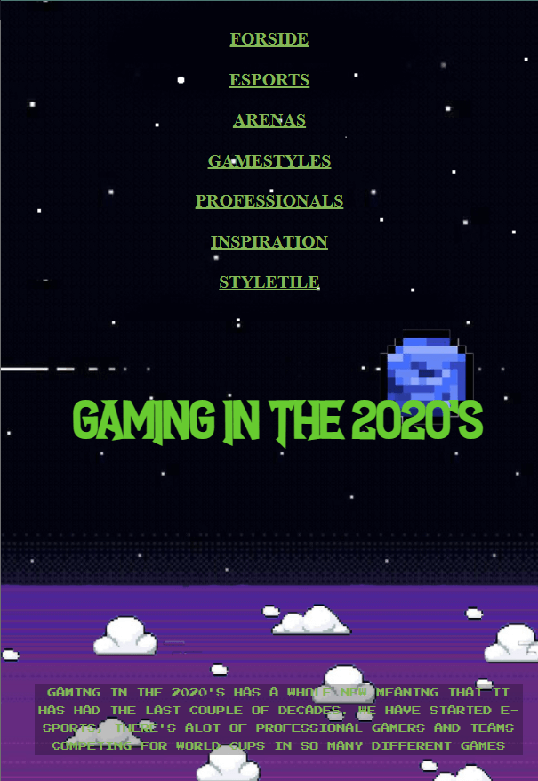
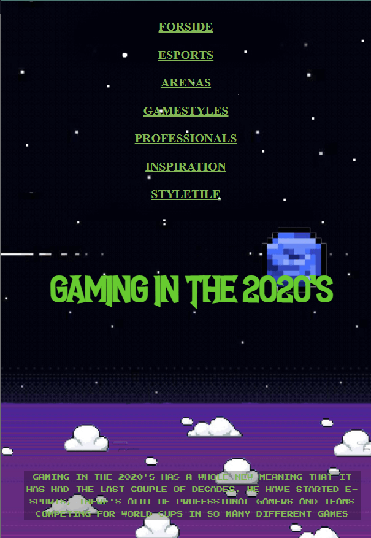

Tema 2 - Grundlæggende HTML
Responsive site V2
I tema 2 skulle vi arbejde med dette responsive site. Her lærte jeg hvordan man bruger diverse hjælpemidler som moodboard, styletile og wireframe. Her fik jeg udleveret stilenarten "videogame design".
Responsivt design betyder, at designet skal kunne tilpasse sig skærmstørrelsen, og se anderledes ud fra desktop og mobil. Hvilket vil sige at denne side er responsiv.
For mig har denne opgave været vigtig, for at ligge grundlaget for hvordan man opbygger et website og hvor vigtig planlægning er, før man begynder at kode det originale website.
Efter denne forberedningsprocessen med lære om en multimedie designers værktøjskasse, begyndte jeg at programmere websitet i HTML og CSS. Og det var her mine HTML og CSS egenskaber blev født.
 

Wireframe
Tema 3 - Grundlæggende UX
idé
I denne opgave arbejdede jeg med en idé til en webshop der arbejder med t-shirts.
Temaets primære fokus var forståelse af emnets teori. Der skulle arbejdes med en række discipliner for forståelse af en god brugeroplevelse. Til dette blev der brugt researchmetoder for at forstå user behaviours, user needs og users motivation.
Efter insamling af kvalitativ og kvantitativ data begyndte idéfasen. Her fandt jeg et tema til min side og lavede sketches.
Tema 3 - Grundlæggende UX
Endelig Prototype
Udfra idé opgaven skulle jeg lave en prototype af websitet i Adobe XD. For at løse denne opgave er det blevet brugt AI, UX og UI for at udføre en hifi prototype.
For at udføre dette, anvendte jeg metoder fra tema 2 ved at bl.a. at lave moodboards, styletiles og producerede en wireframe, for at give et overblik af hvordan mit slutprodukt nogenlunde skulle se ud.
Tema 3 - Grundlæggende UX
Pitch
I denne pitch skulle jeg præsentere min problemstilling af at skabe en online t-shirt forretning, og prototypen jeg var kommet frem til. Det er vigtigt at pitche de konklusioner man har lavet ud fra ens research og sælger sine produkter til den målgruppe man går efter.
I tema 3 lærte vi en række UX researchmetoder; desk research, observation, interview. tænke højt test og The 5 act interview. Ud fra at bruge disse tests, kunne jeg konkludere hvilke komplikationer der kunne opstå i brugeroplevelsen. Herfra kunne jeg gå tilbage til min prototype og finpudse brugerrejsen.
Tema 4 - Animation
Assetliste og designdokumentation
I denne opgave skulle jeg rentegne alle mine UI-elementer, baggrunde og start/slutskærme til mit animerede spil. Dette er herefter sat ind i en assetliste og i designdokumentationen.
I denne opgave lærte jeg at gøre brug af Adobe Illustrator, og hvordan man udvikler sine idéer til animeret grafik.
Jeg fik også gjort brug af teknikker vi brugte i tema 2, f.eks. styletile og moodboard og hvordan man kan udvide dette til et mere overordnet og udvidet styletile.

Designdokumentation
Tema 4 - Animation
Individuelt spil
Mit spil hedder Build the burger.
Under dette forløb skulle vi programmere vores helt eget spil fra bunden.
Her er der blevet implementeret HTML, CSS, Javascript og SVG filer.
Jeg har også arbejdet med et statemachine diagram, hvilket er et hjælpeværktøj til hvordan ens JS skal stilles op.
Det jeg lærte i denne opgave er hvordan man bruger Javascript og et statemachine diagram. Javascript har helt klart været det mest udfordrende, men også mest spændende for mig.


Statemachine Diagram
Tema 5 - Grundlæggende indhold
Pilotprojekt
I dette pilotprojekt skulle jeg producere en kort video sammen med min gruppe.
Det skulle indeholde et interview med en person, der har en passion. Her skulle vi gøre brug af følgende teknikker; B-rolls, establishingshot, og selvfølgelig interview med over the shoulder mm. Vi arbejdede også med preproduktion i form af at lave synopsis, interviewguide og storyboard.
Vi skulle også lave vores egen ekstern lydoptagelse, hvilket vi selvfølgelig fik udført med en ekstern mikrofon, og derefter synkronisere billede og lyd.
I dette projekt lærte jeg mest om hvordan man redigerer i adobe premiere pro, og hvordan man redigerer lyd i audition, mest mht. støjreduktion.
"Driverhuset"
Tema 5 - Grundlæggende indhold
Redesign af hjemmeside
I dette tema skulle vi lave et redesign af en selvvalgt virksomheds website. Det færdige resultat var en håndkodet responsiv website, indholdsproduktion i form at tekst, fotos, video og dokumentation om vores arbejde.
Da det var et gruppeprojekt lærte vi at gøre brug af scrumboard, burndownchart og github, hvilket har været rigtige gode hjælpemidler til at tracke og uddele vores arbejde som gruppe.
Vi fik gjort brug af forskellige analyse teknikker som; BERT test og 5-sekunders test. Derudover analyserede vi hele sitet mht. indholdsoversigt, funktionalitetsliste og wireframe.
For at udføre denne opgave er der blevet anført teknikker lært fra
Tema 2: Wireframe, moodbard, styletile, HTML&CSS
Tema 3: Interview teknikker & analyser
Tema 4: Javascript